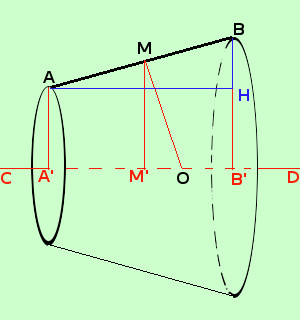
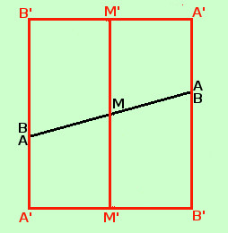

|
 Prima dimostriamo che se M e' il punto medio di AB ne deriva che M' e' il punto medio di A'B': il fatto deriva dal teorema di Talete: infatti considerato il fascio di rette parallele individuato dalle rette AA' e BB' abbiamo che MM' e' una retta che appartiene al fascio e, facendo la proporzione abbiamo AM : MB = A'M' : M'B' ed essendo AM = MB segue che A'M' = M'B'  Dimostriamo ora che MM' = (AA'+BB')/2 Per fare questo basta prima duplicare la figura ABA'B', eseguire poi un ribaltamento attorno ad A'B' della figura duplicata ed infine sovrapporre AB su BA come vedi qui a fianco ottieni 2MM' = (AA'+BB') da cui la tesi |